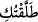

Şüphesiz Allah, emrini yerine getirendir. Allah her şey için bir ölçü koymuştur.
4. Kadınlarınız içinden âdetten kesilmiş olanlarla, âdet görmeyenler hususunda
tereddüt ederseniz, onların bekleme süresi üç aydır. Gebe olanların bekleme süresi
ise, yüklerini bırakmaları (doğum yapmaları)dır. Kim Allah’tan korkarsa, Allah ona
işinde bir kolaylık verir.
5. İşte bu, Allah’ın size indirdiği buyruğudur. Kim Allah’tan korkarsa Allah onun
kötülüklerini örter ve onun mükâfatını arttırır.
“Ey Peygamber! Kadınları boşayacağınızda” Talâk vermek/boşamak, yâni nikâh
düğümünü çözmek ve açmak demektir. Müfredat’ta “talak” kelimesinin aslının herhangi
bir nesneyi bir bağdan çözmek, kurtarmak anlamına geldiği kaydedilmektedir. Arapçada
bu anlamda “atlaktu el-baıyra min ıkâlihî”/deveyi bağlı olduğu bağdan çözdüm,
salıverdim demektir. “Tallaktuhû” ve hüve tâlikun ve talikun denirki o bu bağdan
boştur, serbesttir, herhangi bir kayıtla kayıtlı değildir, anlamınadır. İşte “tallaktu el-
merete” onu salıverdim ifâdesi bu yukarda zikredilen anlamda istiâre sanatıyla
kullanılmıştır. Arapçada “hiye tâlikun” denir ki anlamı o kadın nikâh bağından boştur,
demek olur. Arapçada “talâk” kelimesi “tatlîk” yâni boşama anlamına isimdir. Tıpkı
“selâm” kelimesinin, “teslîm” anlamına, “kelâm” kelimesinin “teklîm” anlamına isim
olması gibi. Bu konuda âlimlerin beyanına göre kadın hakkında kullanılan kelime
“tatlîk” kelimesidir. Kadının dışında başka şeylerin bağından kurtarma anlamında ise
“ıtlâk” sözcüğü kullanılmaktadır. Bu nedenle bir erkek karısına “/atlaktuki” dese
bu ifâdesiyle boşamaya niyet etmediği sürece boşanma gerçekleşmez, oysa ”/tallaktuki” deseydi, niyet etse de etmese de boşanma gerçekleşmiş olurdu.
Yukarıdaki âyetin mânâsı: Ey Peygamber! Kendileriyle zifafa girdiğiniz ve iddetleri
hayız beklemek şeklinde olan kadınlarınızı boşamak istediğinizde ve buna
azmettiğinizde... demek olur. Âyeti bu şekilde tefsir etmemize ilerde gelen
“tallıkûhünne/ onları boşayın” fiili karine teşkil etmektedir. Yukarıdaki âyeti
“boşadığınızda” şeklinde anlamamız mümkün değildir. Çünkü böyle anlarsak ilerdeki
fiilde “boşayın” şeklinde geldiği için bu durumda bir kavram yine kendisinin sonucunu
doğurmuş olur. Oysaki herhangi birşey kendisinin sonucunu doğurmaz hiç kimseye
meydana gelmiş olan bir şeyi meydana getirmesi emredilemez.
Bu âyet-i kerîmede herhangi bir şeyi gerçekleştirmeye yaklaşmış olan kişi ona
başlamış mertebesine indirilmiştir. Bundan daha zâhir olanı ise âyet-i kerîme sebebin
zikri ve fakat müsebbebin irâde edilmesi kabilindendir. Âyetin başındaki nida hem Hz.
Peygambere ve hem de ümmetine genel olduğu halde sadece Peygamberimiz’e tahsis
edilmesinin sebebi gerçek muhatabın Hz. Peygamber olduğunu ve ümmetinin bu hitâba
peygambere tâbi olma yoluyla ve peygamberin ümmete tağlibi şeklinde olmasından
dolayıdır. Bu âyet-i kerîmede emre muhatab olan kişi ona muhatab olmayana tağlib